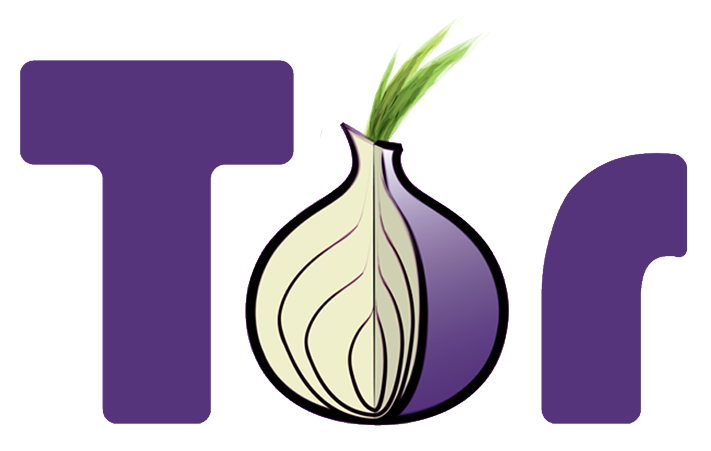

Saltem la mordassa amb Tor
En aquest espai, us ensenyarem una eina molt fàcil d’utilitzar, que no tan sols ens permetrà accedir a continguts que han estat censurats sinó que a més ens permetrà navegar per la xarxa amb garanties de confidencialitat. Aquesta eina és la xarxa Tor i el seu navegador. Per als curiosos, us deixem aquest enllaç on s'explica com funciona Tor amb més detall.
Com funciona Tor?
Tor és una xarxa des de la qual no es pot seguir la traça que generem al navegar per internet perquè cada node de la xarxa només sap quin és el següent node que ha de contactar però no quin és l’origen ni el destí del missatge. Per exemple, quan accedim a google.com amb un navegador convencional, Google automàticament detecta la nostra posició i ens redirigeix a la pàgina del navegador preparada per la nostra situació geogràfica. A la imatge 1, veiem la pàgina de Google des d’un navegador Mozilla convencional i, a la imatge 2, veiem la pàgina de Google des d’un navegador que passa per la xarxa Tor. Tal com es veu, mentre que des del navegador convencional veiem la pàgina de Google personalitzada per la nostra regió, el navegador que va per la xarxa Tor canvia la nostra localització. Google creu que hi hem accedit des d’Alemanya i per això ens mostra la versió de la seva web en alemany.
Accedir a la xarxa Tor pot semblar molt complicat, però en realitat no ho és. De fet, és molt senzill. Només s'ha de descarregar un navegador que ja està preconfigurat per accedir a la xarxa Tor. Es tracta del navageador Tor i el podem trobar disponible per Linux, Windows, iOS i Andorid.
